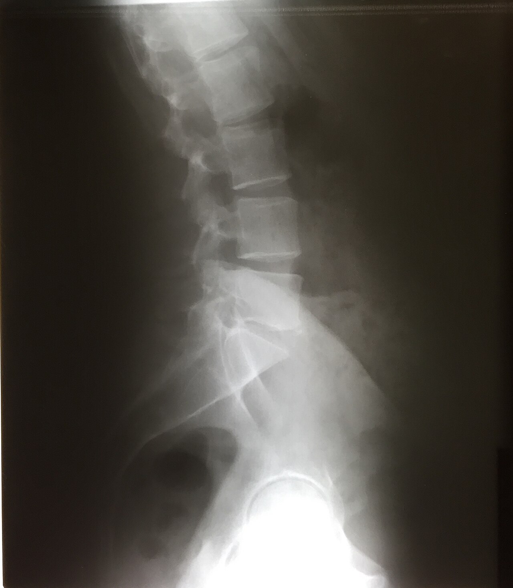

Ficha del catálogo
Radiografía lateral de columna lumbar
- Sistema
- Óseo
- Modalidad
- RX
- Región
- Columna
- Dificultad
- Intermedio
Estudio inicial del dolor lumbar cuando existen datos de alarma. Permite valorar alineación, altura de los cuerpos vertebrales, espacios discales y cambios degenerativos, que son extraordinariamente frecuentes a partir de la cuarta década.
Técnica
Paciente en decúbito lateral con las rodillas flexionadas o en bipedestación. Las proyecciones dinámicas en flexión y extensión se reservan para estudiar inestabilidad.
Qué observar
- Alineación de los cuerpos vertebrales: Un escalón indica espondilolistesis
- Altura de cada cuerpo vertebral (el acuñamiento anterior sugiere fractura por compresión)
- Espacios discales: Su disminución con esclerosis de los platillos indica discopatía degenerativa
- Osteofitos en los márgenes anteriores y laterales de los cuerpos
- Integridad de la pars interarticularis, cuya solución de continuidad define la espondilolisis
- Alineación sacra y ángulo lumbosacro
Hallazgos
Columna lumbar con cambios degenerativos: Reducción de espacios discales, esclerosis de platillos vertebrales y osteofitos marginales.
Perlas
Los hallazgos degenerativos son tan comunes en personas sin síntomas que casi nunca explican por sí solos el dolor. Hay que correlacionar siempre con la clínica antes de atribuirle al disco la causa del cuadro.
Diagnóstico diferencial
- Fractura vertebral por compresión osteoporótica
- Hay acuñamiento anterior con pérdida de altura y preservación relativa del muro posterior, sin masa de partes blandas ni destrucción pedicular.
- Fractura patológica por lesión tumoral
- Se asocia destrucción del pedículo, afectación del muro posterior y masa de partes blandas, con frecuencia en varios niveles y sin traumatismo previo.
- Espondilolistesis degenerativa
- El deslizamiento vertebral ocurre con la pars interarticularis íntegra y se acompaña de artrosis facetaria marcada, típicamente en el nivel L4-L5.
- Espondilolistesis ístmica
- Existe una solución de continuidad en la pars interarticularis, mejor vista en la proyección oblicua, y el deslizamiento suele situarse en L5 sobre el sacro.
- Espondilodiscitis infecciosa
- Se pierde la definición de dos platillos contiguos con destrucción del espacio discal intermedio, patrón que la distingue del tumor, que suele respetar el disco.
- Espondiloartritis inflamatoria
- Aparecen esclerosis y erosiones sacroilíacas, cuadratura de los cuerpos vertebrales y sindesmofitos finos y verticales, distintos de los osteofitos degenerativos, más gruesos y horizontales.
Simuladores
- El gas intestinal y el contenido colónico se proyectan sobre los cuerpos vertebrales y simulan zonas líticas o esclerosas.
- Las variantes de transición lumbosacra hacen equivocar el nivel numerado y llevan a informar un segmento por otro (conviene contar siempre desde una referencia fija).
- Los osteofitos degenerativos y la calcificación del ligamento longitudinal anterior pueden simular sindesmofitos inflamatorios si no se atiende a su grosor y orientación.
- Una fractura antigua ya consolidada puede parecer aguda si no se compara con estudios previos ni se valora la esclerosis del borde.
Por modalidad
- RX
- Estudio inicial ante datos de alarma: Valora alineación, alturas vertebrales, espacios discales y permite proyecciones dinámicas para inestabilidad.
- RM
- Estudio de elección para disco, raíces, médula y edema óseo, y el único que distingue fractura reciente de antigua por la presencia de edema.
- TC
- Define con precisión la anatomía ósea, la pars interarticularis, la extensión de los trazos y el compromiso del canal, y guía procedimientos.
- US
- Papel muy limitado en el adulto (sirve sobre todo para guiar punciones y bloqueos y para valorar el canal en el lactante).
Protocolo
La proyección lateral se obtiene con el paciente en decúbito lateral, caderas y rodillas flexionadas y un apoyo bajo la cintura para mantener el eje de la columna paralelo a la mesa, con el rayo central dirigido a la altura de L3, aproximadamente en la cresta ilíaca. Se emplea colimación estrecha y técnica alta por el grosor de la región, con control de la respiración. Se complementa con una anteroposterior y, si se busca espondilolisis, con oblicuas. Las proyecciones en flexión y extensión, realizadas en bipedestación y con el máximo movimiento tolerado, se reservan para documentar inestabilidad.
Clasificación
La escala de Meyerding gradúa la espondilolistesis en cuatro grados según el porcentaje de deslizamiento del cuerpo vertebral sobre el inferior, en tramos de un cuarto, reservando el término espondiloptosis para el desplazamiento completo. Para las fracturas vertebrales se usa el método semicuantitativo de Genant, que clasifica la deformidad en leve, moderada o grave según el porcentaje de pérdida de altura del cuerpo. Los cambios de señal de los platillos se describen con los tipos de Modic en resonancia, y la degeneración discal con la escala de Pfirrmann.
Errores frecuentes
- Atribuir el dolor lumbar a los hallazgos degenerativos, que son casi universales a partir de cierta edad y frecuentes en personas sin síntomas.
- No distinguir si una fractura vertebral es reciente o antigua, dato que requiere resonancia o comparación con estudios previos.
- Equivocar el nivel por no considerar las variantes de transición lumbosacra, con consecuencias serias si se planifica cirugía.
- Limitar la lectura a la columna y no revisar el resto del campo, donde pueden verse aneurismas calcificados o lesiones abdominales.

lumbar columna espondilosis discopatia degenerativo osteofitos lumbalgia